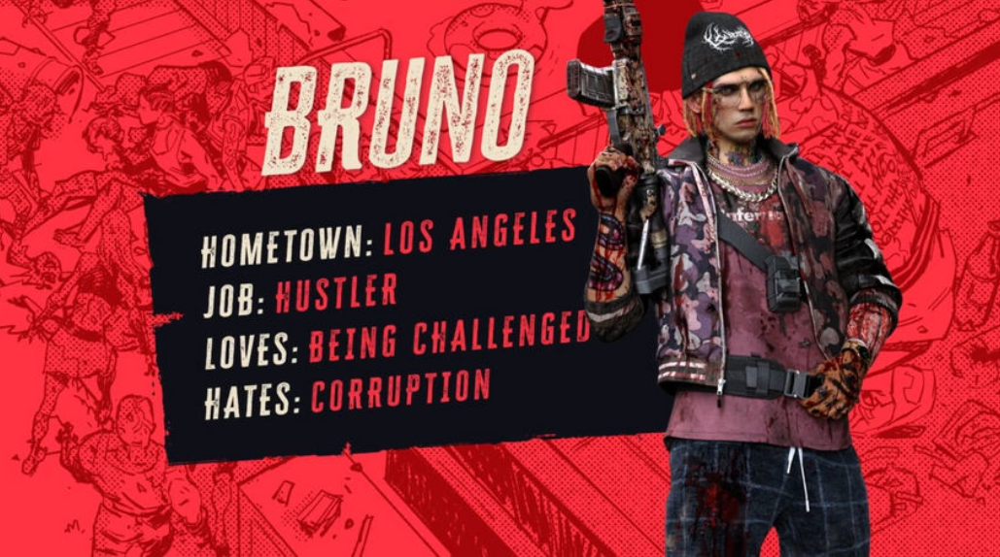
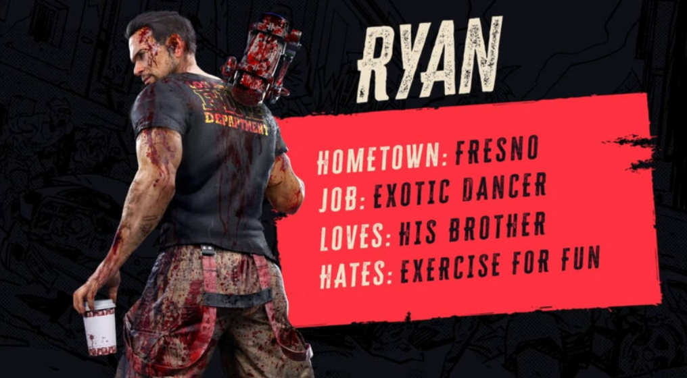
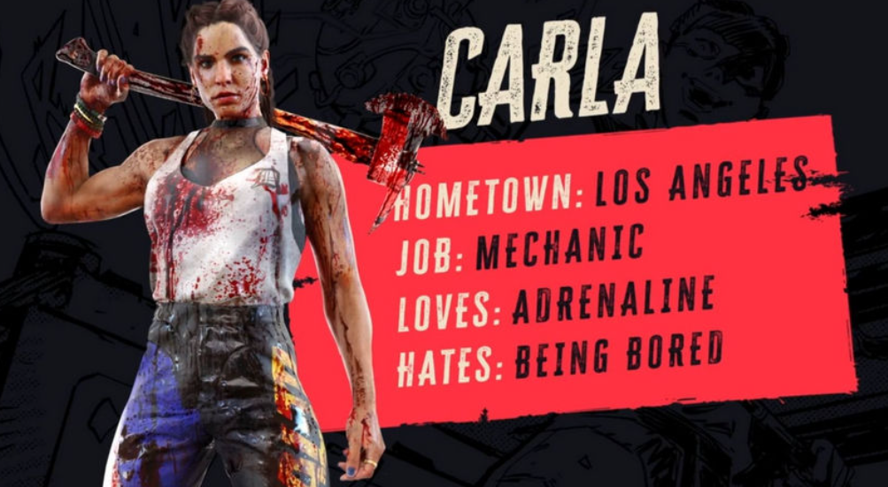
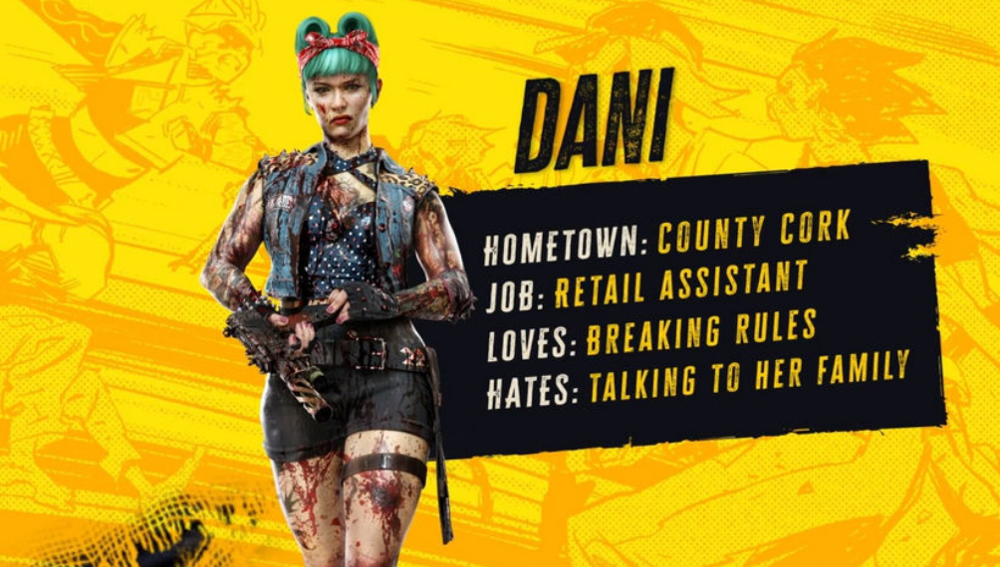
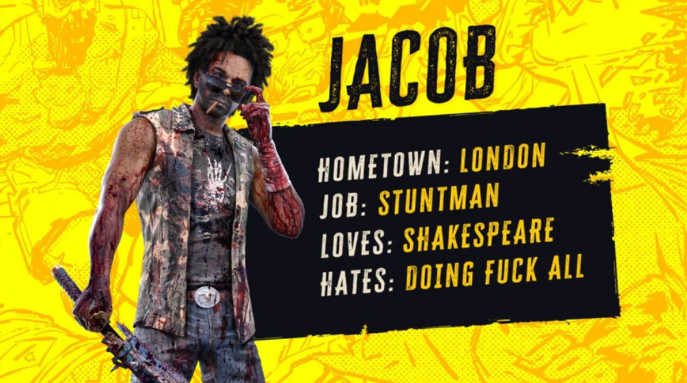
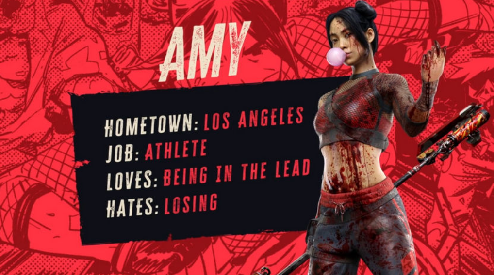

Персонажи
Бруно

Бруно — один из шести доступных персонажей, которых вы выбираете в Dead Island 2. Бруно родился и
вырос на улицах Лос-Анджелеса. Его воспитание дало ему мощную способность: скрывать свои
смертоносные навыки обращения с ножом за фасадом обезоруживающего калифорнийского очарования.
Но он больше, чем просто обаятельный человек. Бруно достаточно умен, чтобы его жизнь до
зомби-апокалипсиса включала ограбления крупных мошенников и спамеров. Итак, если вы ищете убийцу,
который любит вызовы и всегда имеет план, когда дело доходит до уничтожения нежити, то Бруно — тот
парень, которого вы должны выбрать.
Райан

Райан — экзотический танцор с золотым сердцем, который всегда готов помочь любому выжившему. Он
может быть упрямым и обладает саркастическим чувством юмора, которое временами может быть
пессимистичным, но он компенсирует это своей неукротимой энергией.
Прежде чем самолет, который Райан планировал использовать, чтобы выбраться из города, разбился, он
должен был вернуться к своему младшему брату, который остался до вспышки зомби во Фресно,
Калифорния. Теперь, когда ад вырвался на свободу, у Райана есть план: выжить, выбраться из города и
вернуться к своему брату и сестре. Если он сможет убить несколько зомби по пути, то это будет
хорошо.
Карла

Райан — экзотический танцор с золотым сердцем, который всегда готов помочь любому выжившему. Он
может быть упрямым и обладает саркастическим чувством юмора, которое временами может быть
пессимистичным, но он компенсирует это своей неукротимой энергией.
Прежде чем самолет, который Райан планировал использовать, чтобы выбраться из города, разбился, он
должен был вернуться к своему младшему брату, который остался до вспышки зомби во Фресно,
Калифорния. Теперь, когда ад вырвался на свободу, у Райана есть план: выжить, выбраться из города и
вернуться к своему брату и сестре. Если он сможет убить несколько зомби по пути, то это будет
хорошо.
Дани

Пройдя весь путь из графства Корк в Ирландии, Дани — упрямая скандалистка, которая может шокировать
вас своим сквернословием и извращенным чувством юмора.
Не позволяйте этой продавщице одурачить вас своим милым рокабилльным внешним видом, поскольку она
любит нарушать правила и продираться сквозь зомби так же, как она продиралась сквозь
противоборствующие команды роллер-дерби до появления зомби.
Джейкоб

Джейкоб не боится перемен. В конце концов, он был рад оставить успешную карьеру биржевого маклера,
чтобы осуществить свою мечту стать голливудским каскадером.
Его приспособляемость — не единственное, что делает этого лондонского мальчика великим истребителем
зомби. Джейкоб также, не имеет инстинкта самосохранения. Но кого волнует безрассудство, когда
Джейкоб выглядит так круто, делая то, что он делает?
Обаяние Джейкоба и чутье рок-звезды могут быть всем, что вы ищете в убийце во время
зомби-апокалипсиса. Однако имейте в виду, что он не такой стойкий, но он компенсирует это отличным
пиковым показателем здоровья. Ниже вы найдете таблицу со всеми атрибутами Джейкоба.
Эми

Эми — паралимпийка, которая любит лидировать и ненавидит проигрывать больше всего на свете. Ее
любовь к бегу помогла ей оставаться в форме и оставаться живой во время зомби-апокалипсиса.
Для Эми каждое столкновение с зомби похоже на головоломку, которую она должна решить на ходу,
поэтому улицы превратились в гигантскую полосу препятствий, где она может делать то, что у нее
получается лучше всего: добиваться успеха.